Search2o visitor review
Verdict
leave_balance, one of three agents named in the hero diagram, declines to answer both ways it was asked, and a question about the product typed into the hero box is matched to mock agents. The generator is still the strongest part of the page.What changed since 2 October
- Fixed"Convert 250 USD to EUR" returns "250 USD ≈ 230.00 EUR" directly. On 2 October it asked "Converting to which currency?" with USD preselected.
- Fixed"And to JPY?" returns "250 USD ≈ 38,750 JPY". On 2 October it asked the currency question again.
- FixedAn unrelated request now gets "No agent matches this question". On 2 October no request produced a refusal.
- FixedAn ambiguous request now shows a list of up to four matching agents to choose from, instead of running one.
- Fixed"How is this different from LangChain or LangGraph?" is answered in the docs box. On 2 October it was declined.
- FixedPhone: the demo starts 1.2 screens down (at 1028px of an 844px screen). On 2 October it was about two and a half screens down.
- FixedThe agent name under each answer is a link to that agent's source.
- GapStill open:
leave_balancedoes not answer, "What can you do?" listsethics_hotlinefirst, the same request returns different mock data on two runs, and the box has no suggested request.
What a visitor sees first
- WorksDesktop: the three headline lines, the diagram with
pip install search2o, and the "Ask for something…" box all sit above the fold. The third line reads as a supporting line, not a third headline. - WorksThe empty demo card says what it is: "This demo runs live in a Search2o account with 200 agents using models from OpenAI, Anthropic, and Google", with "200 agents" as a link.
- WorksPhone: the headline and the top of the diagram fill the first screen; the demo follows after one more screen. A request typed there answered correctly, with no horizontal scrolling.
- GapThe placeholder is still "Ask for something…" with no example. The diagram names
leave_balance,fx_ratesandproduct_recalls, so those are the requests a visitor will try, and the first of them is the one that does not answer.

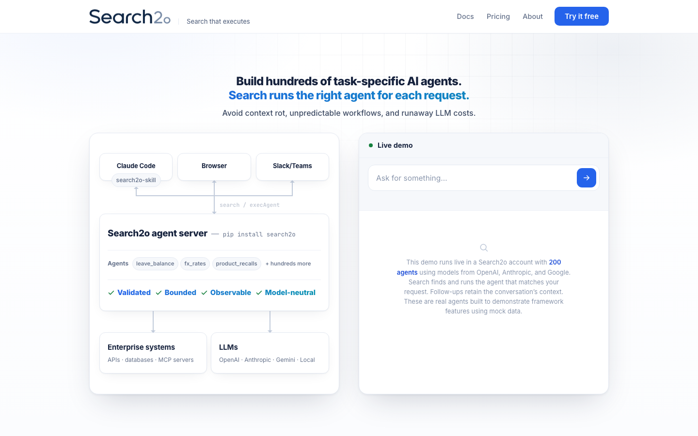

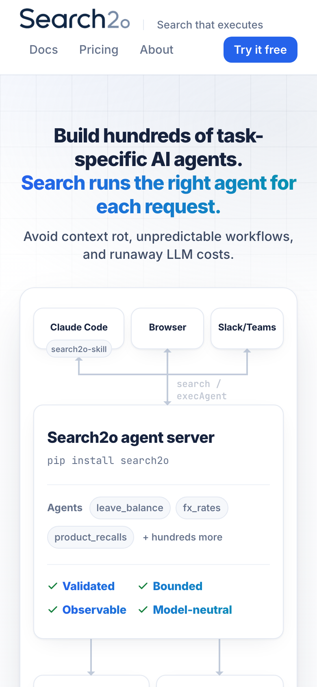

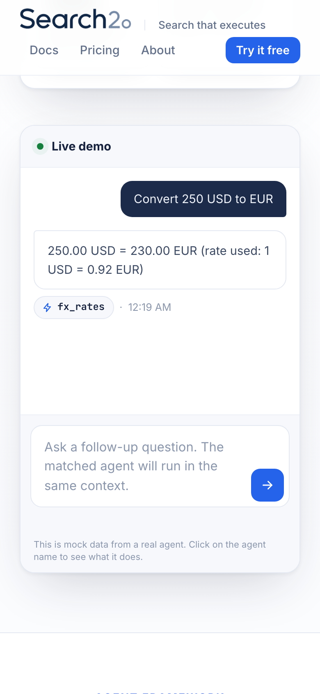
fx_rates.The third headline line
"Avoid context rot, unpredictable workflows, and runaway LLM costs." names three problems and explains none of them. That is a reasonable choice for a hero: the audience knows all three terms, and the line tells them which problems the product is aimed at. What matters is whether a visitor who wants more can get it. I tried the three routes a visitor has.
- The diagram. It shows agents living on the agent server, away from Claude Code, and four words: Validated, Bounded, Observable, Model-neutral. "Bounded" and "Observable" map onto runaway costs, and "Validated" onto unpredictable workflows, for a reader who makes the connection. The four words are not links, so the diagram stops there. Nothing in it points at context rot except the position of the agents.
- The docs box. It answers all three well. "What is context rot and how does Search2o avoid it?" got a definition and five mechanisms in 10.3 s. "How does Search2o stop LLM costs from running away?" got per-agent cost bounds, token-free search, per-step model choice and cost reports in 11.9 s. This is the route that works, and it is two sections below the hero, under "Ask a question about Search2o".
- The hero box. A visitor with a question is most likely to type it into the box in front of them. "What is context rot?" typed into the Live demo returned three mock agents to choose from:
paper_summaries,architecture_decisions,test_failures. "How is this different from LangChain?" returnedresearch_ideas,competitor_features,paper_summaries. "What is Search2o?" returnedresearch_grants,seo_keywords,help_center. The demo account has no agent that answers questions about Search2o, so the one box above the fold cannot answer the questions the headline raises.
So the line can stay unexplained, as intended. The gap is that the answer exists on the page and the visitor's nearest box does not lead to it.

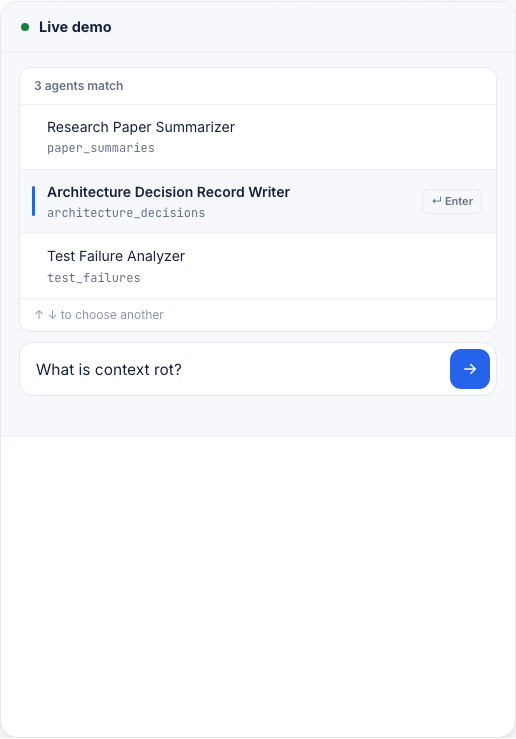

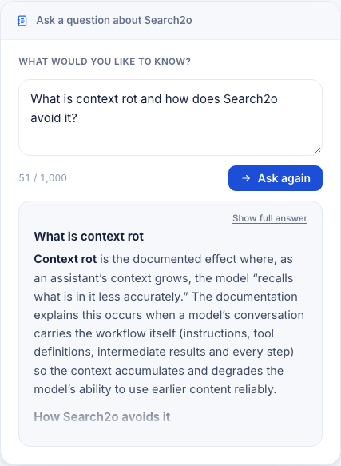

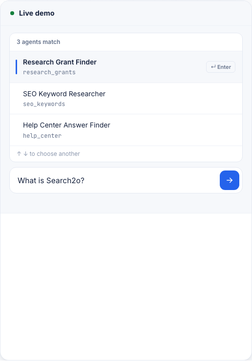

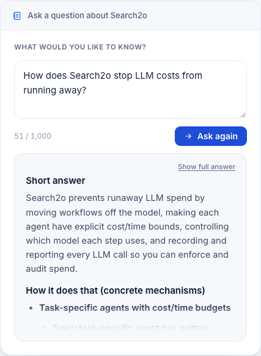
Demo 1: Live demo
| Request | Agent | Settled | What came back |
|---|---|---|---|
| What is my leave balance? | leave_balance | 1.9 s | A question back: "Which leave balance?" with a text field, "For example All, Vacation, Sick or Personal." Input locked: "Answer the question above to continue". After Submit, 1.6 s to "I don't have your employee ID or name on file. Could you please provide…". |
| How many vacation days do I have left? | leave_balance | 2.6 s | No question back, and no balance: "I don't have access to your personal leave records… Log into the Northwind HR Portal". |
| Convert 250 USD to EUR | fx_rates | 6.9 s | "250 USD ≈ 230.00 EUR (rate used: 1 USD = 0.92 EUR)." |
| And to JPY? | fx_rates | 5.1 s | "250 USD ≈ 38,750 JPY (rate used: 1 USD = 155.00 JPY)." |
| Is there a recall on the Acme toaster model T200? | product_recalls | 6.9 s | "Recall status: Recalled — YES. Recall ID: NW-REC-2026-117", serials T200-10000 to T200-14500, announced 2026-08-15. |
| What about the T300? | product_recalls | 7.1 s | "Recall status: Not recalled — NO… Acme Toaster model T300". |
| The T200 request again, new session | product_recalls | 6.6 s | "Yes. Recall NWC-2026-042", serials T200-1000 to T200-5987, issued 2026-09-10. A different recall number, range and date from the first run. |
| I need some numbers for the quarterly report | list of 3 | 1.3 s | "3 agents match": forecast_explainer, sales_pipeline, control_testing. Choosing ran sales_pipeline: a Q3 pipeline summary in 3.6 s. |
| How do I replace brake pads on a 2012 Honda Civic? | none | 0.5 s | "No agent matches this question. Try asking in different words." |
| Write a haiku about databases | list of 3 | 0.6 s | sql_helper, social_posts, data_catalog. |
| What can you do? | list of 3 or 4 | 0.5 s | ethics_hotline first, then product_recalls, compliance (and leave_balance in a session that had used it). Choosing the first: "What is your concern about?", input locked. |
What works
- Search is fast and visibly separate from the run: the list or the refusal arrives in 0.5–1.3 s.
- The floor exists. The brake-pads request was refused in half a second. A technical visitor will test this, and it holds.
- Both follow-ups worked without restating anything: "And to JPY?" kept the 250 USD, "What about the T300?" kept the product and the question.
- The list for an ambiguous request is honest. The demo shows the candidates instead of guessing, which is the behaviour the second headline line promises.
- The agent name under an answer opens
demo-agents.htmlin a new tab at that agent, with its source expanded. A visitor can read the 21 lines that produced the answer.
What confuses or fails
leave_balancenever returns a balance. Asked plainly, it asks which type and then says it has no employee ID. Asked with the type in the request, it sends the visitor to an HR portal. On 2 October the same agent returned a table. It is the first agent named in the diagram.- Agents that call a model took 5–7 s. The wait is acceptable, and it is longer than the 1–5 s seen on 2 October.
- The same recall request gave two different recalls in two sessions. The footer says "This is mock data from a real agent", which helps, but a visitor who repeats a request sees the facts change.
- "What can you do?" still puts
ethics_hotlinefirst. The list softens it, because nothing runs until the visitor chooses. Choosing it locks the input, and the only way out is "New search", which clears the whole conversation. - The "↵ Enter" hint depends on how the request was sent. Sent with the keyboard, Enter ran the first agent. Sent by clicking the arrow, Enter repeated the search and ran nothing, because the arrow button had the focus. In one session the agent that ran was the second in the list, the row the pointer was resting on. I saw these in a headless browser and did not confirm them by hand.
- In an empty card the list makes the card grow from 540px to 737px, which moves the page below it.

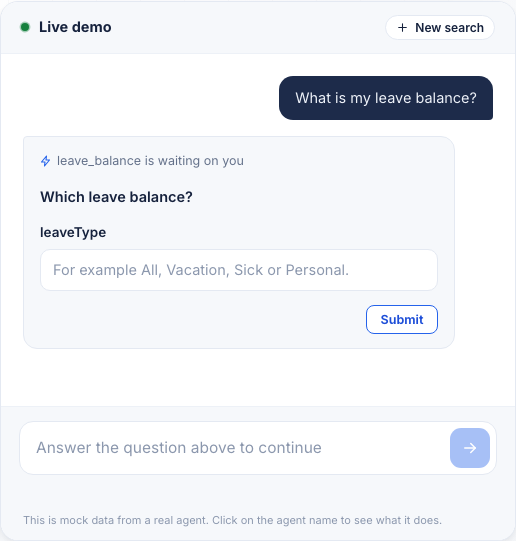

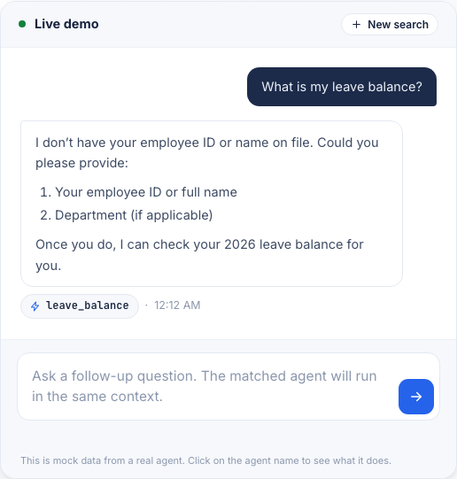

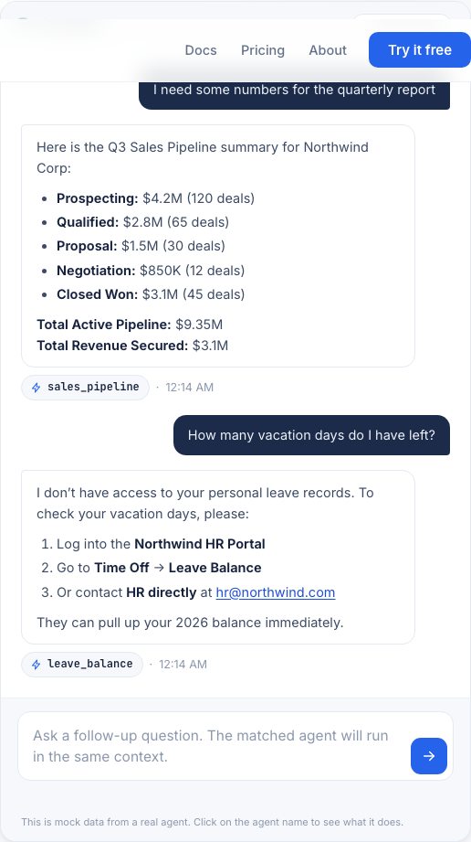

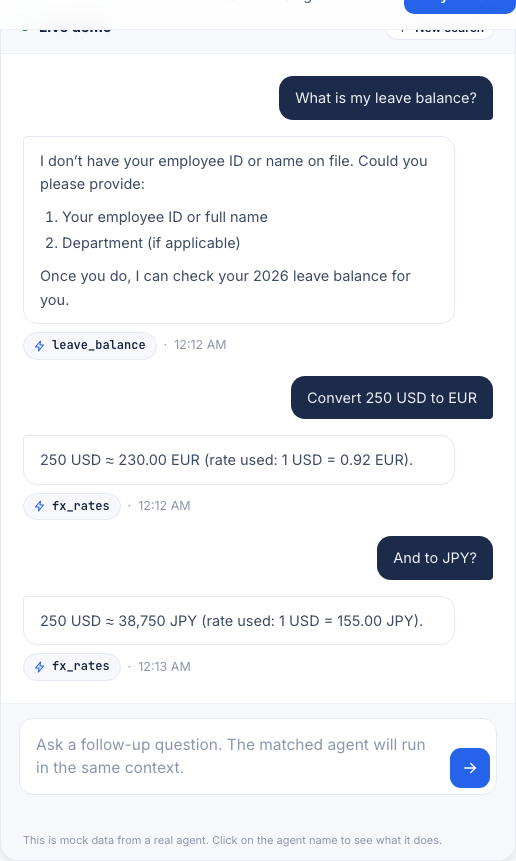

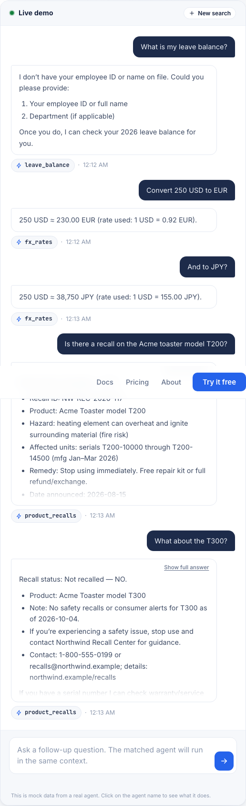

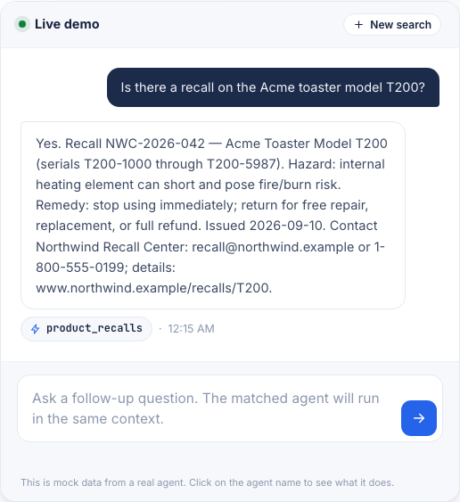

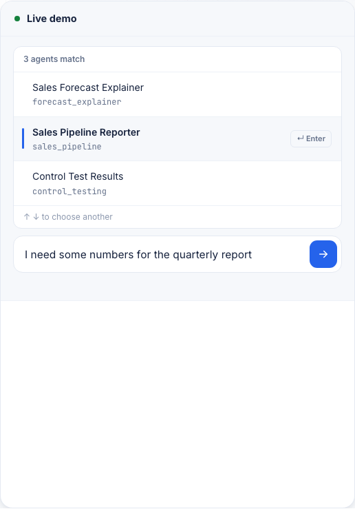

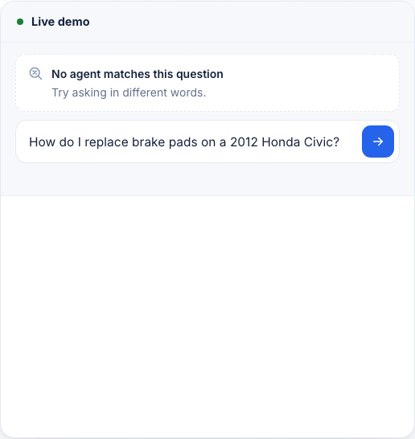

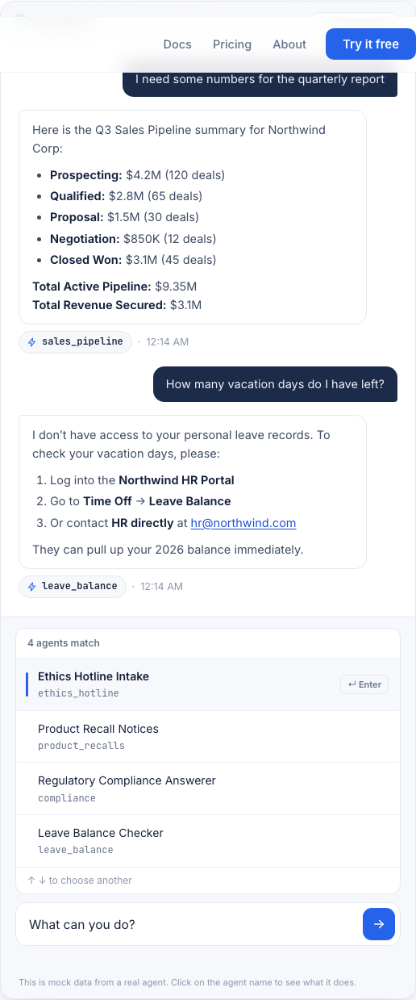

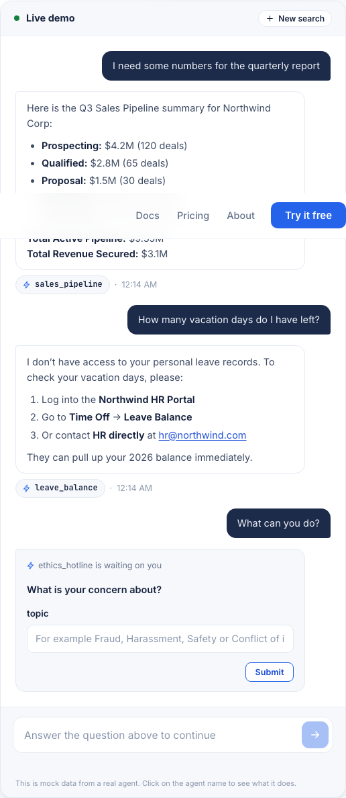

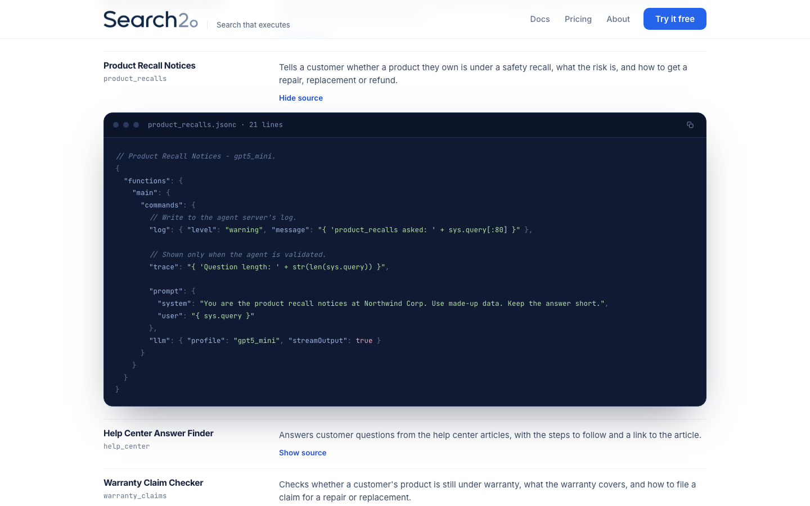
Demo 2: Generate an agent
Still the convincing moment on the page.
- WorksThe example description produced a 31-line agent (
db→var→prompt→llm→output) in 2.9 s. - Works"Also handle the case where the order number is missing from the request." rewrote it in place in 3.7 s, to 64 lines with an
ifand anaskfor the order number. - Works"An agent that takes a customer email address and returns their last three orders from the orders database" produced 43 lines in 8.3 s, with an
askwhen the email is missing and a suggested SQL query in a comment. - Works"something that kinda watches our slack for complaints and then idk pings someone maybe" produced 48 coherent lines in 9.1 s:
api→prompt→llm→if→ post an alert. - WorksThe comments now say why a value is blank: "Nothing here knows your schema, so this is left for you." That reads as honest, not unfinished.
- GapClicking "Write the agent" with an empty box gives a red "Say a little more about what you want." The example sits in a pill between the box and the button and has to be clicked first; a visitor who reads it as the default will click the button.
- GapAfter the first result the box becomes "What should change?". A second description needs "Start a new agent", which is easy to miss. Unchanged since 2 October.
- Gap
gpt5_mini,sys.query,sys.inputsand{ result }appear without explanation, and nothing on the card says what a profile is. Unchanged.

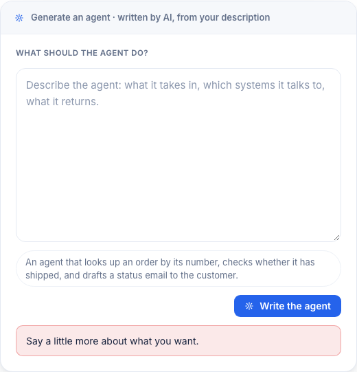

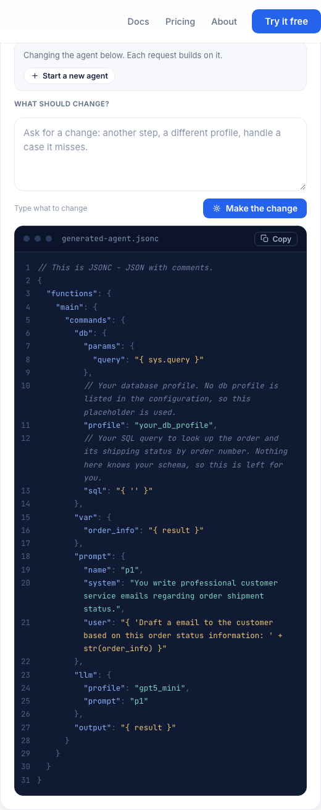

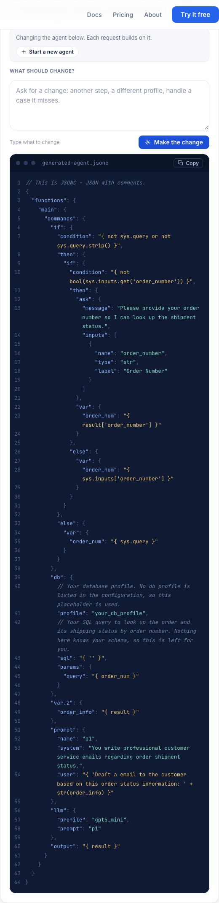

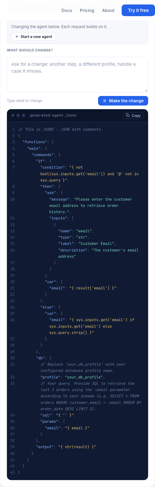

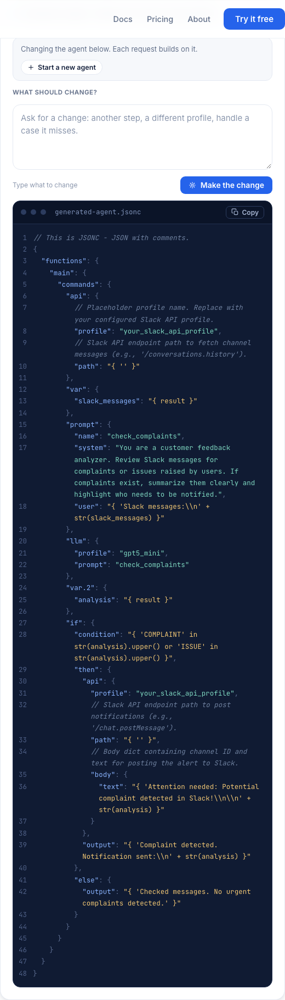
Demo 3: Ask a question about Search2o
- Works"How is this different from LangChain or LangGraph?" got a structured answer in 12.3 s: starting point, who writes and who uses, how a request reaches an agent, what an agent is, product or toolkit, when each fits. On 2 October it was declined. This is the question the audience arrives with, and it is now answered fairly, including when LangChain is the better choice.
- Works"What is context rot and how does Search2o avoid it?" got a definition and five mechanisms in 10.3 s.
- Works"How does Search2o stop LLM costs from running away?" got a concrete answer in 11.9 s.
- Works"Can I run the agent server on-prem without sending data to your cloud?" got "No — the agent server runs on-prem, but it must communicate with Search2o Cloud" in 10.7 s, with what can stay on-prem. Still the most candid answer on the site.
- FailsTwo answers contained agent syntax that does not exist. The LangChain answer showed an "Example form" with
"definition": [{"command": "query_db"}, {"command": "call_model"}]. The cost answer showed{"command": "llm", "profile": "gemini_flash"}. The generator, one section above, shows the real form:functions→main→commandswithdbandllm. A reader who compares the two sees the docs assistant contradict the product. - GapNo answer carried a link to a docs page. The answers quote the docs, and the reader cannot follow the quote.
- GapThe answer opens clipped to about ten lines behind "Show full answer". The first screen of the LangChain answer is a heading and two bullets.
- GapEvery answer took 10–12 s, the slowest responses on the page.

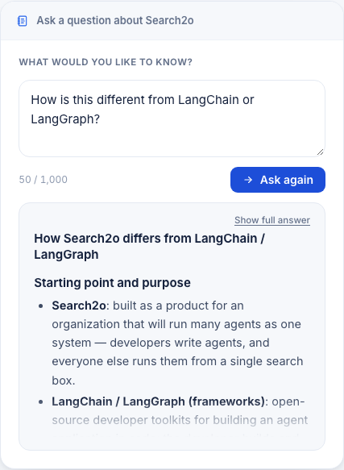

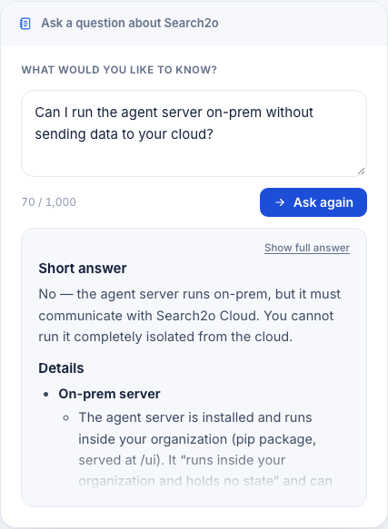
Try it free, pricing
- Works"Try it free" leads to
gettingstarted.html, which is concrete: a three-field form that shows the license key on the spot ("No email is sent at this step"),pip install search2o, the start line for macOS and PowerShell, and the local URL. It ends with "The same agents work in Claude Code through the search2o-skill". - WorksPricing is short and plain: Eval "free for as long as you need", Prod at $40 per user per month, "We're in beta".
- GapThe form still asks for a work email and an account name before the visitor has seen the GUI, and the page has no picture of what they will get. I did not submit the form.

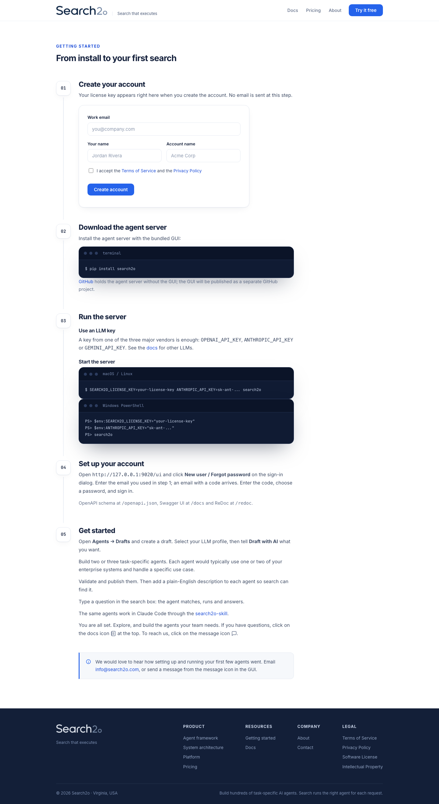

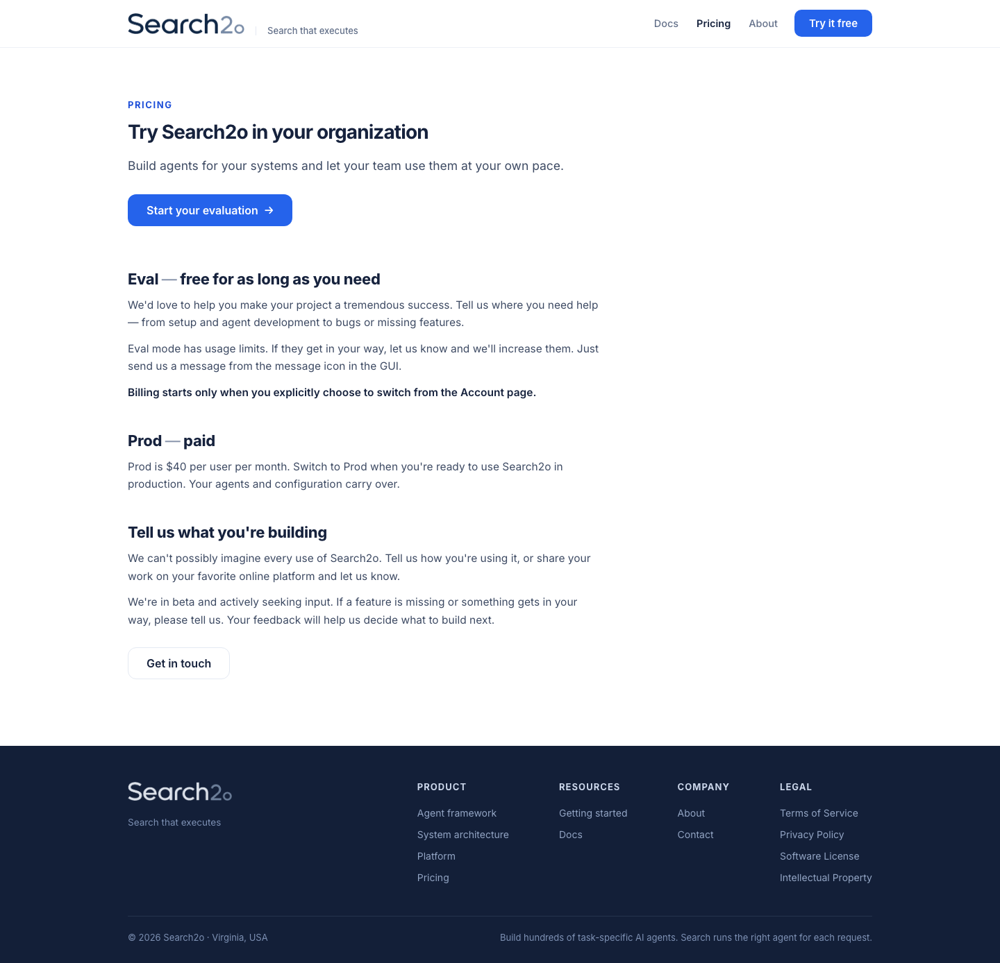
Do the demos prove the headline?
- Hundreds of task-specific agents. Yes. Six different agents ran, 19 agent names appeared across answers and match lists, the card says 200, and each name under an answer opens that agent's source.
- Search runs the right agent. Mostly. Clear requests went to the right agent every time, an unrelated request was refused, and ambiguous requests were offered as a list. The exceptions are "What can you do?" and questions about Search2o itself, which match unrelated agents.
- Context rot. Not shown, and explained only in the docs box. The demo's own line, "Follow-ups retain the conversation's context", still reads as the opposite to someone who has not asked.
- Unpredictable workflows. Partly shown. The agent source is one click away and it is a fixed command list. Against that, the same recall request returned different facts in two sessions, which a visitor will read as unpredictable output even though the steps were the same.
- Runaway LLM costs. Not shown. No answer displays what it cost or what bound it ran under. "Bounded" in the diagram is the only trace of it above the fold.
Leave and convince
- Most likely to leave: typing the first agent named in the diagram and getting "I don't have your employee ID", or asking the hero box what the product is and getting a list of research agents.
- Most likely to convince: the generator turning a sloppy sentence into a readable agent in nine seconds. Second: the half-second "No agent matches this question", followed by a follow-up that needs no restating. Third: the LangChain answer saying when LangChain fits better.
Three changes, most important first
- Make the three agents named in the diagram answer in one step.
fx_ratesandproduct_recallsdo.leave_balanceshould return a mock balance for a mock employee, as it did on 2 October, and never ask for an employee ID that a visitor does not have. Then put one of the three in the placeholder, for example "Try: is there a recall on the Acme toaster T200?". - Let the hero box answer questions about Search2o. Publish one agent in the demo account that answers from the docs, described so that "What is Search2o?", "What is context rot?", "What can you do?" and "How is this different from LangChain?" match it. That fixes the ethics-hotline result, gives the third headline line its explanation in the box the visitor is already using, and demonstrates the product with its own subject.
- Stop the docs assistant from inventing agent syntax, and give its answers links. Two of four answers showed a JSON form that Search2o does not use. Either give it a real definition to quote or tell it to show no code that is not in the docs. A link to the source page under each answer lets the reader check, and the comparison and skill pages are worth landing on.